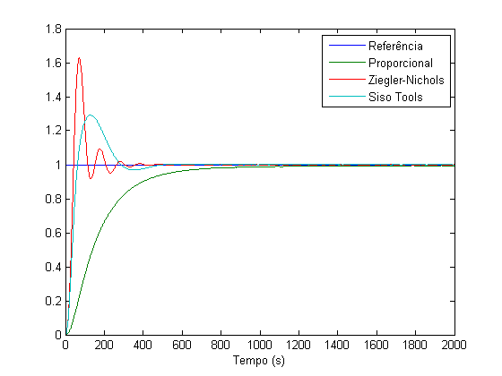
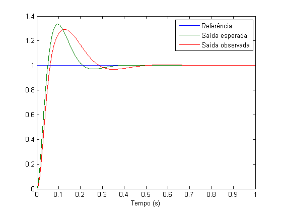
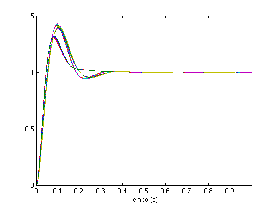
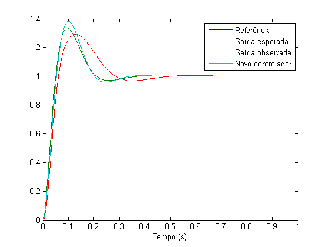
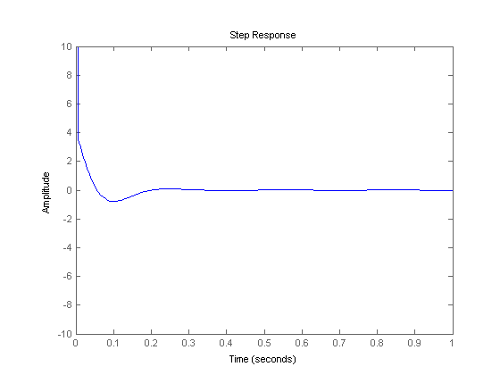

Contents
ES868 – Pré Relatório Lab 4
Controle de plantas eletrônicas utilizando um controlador PID analógico
Turma A - 30/03/2015
- Augusto Miranda Garcia - 104627
- Guilherme de Oliveira Souza – 117093
- Vinícius Ragazi David - 120258
load ../G.mat load ../pids.mat load ../lab3/sinais_tratados.mat s = tf('s');
Controlador escolhido
Dentre os três controladores PID desenvolvidos no lab passado, o que apresentou melhor desempenho (menor overshoot e melhor tempo de estabilização) foi o terceiro, feito pelo sisotool.
Veja comparação abaixo:
plot([referencia, saida1, saida2, saida3]); legend('Referência', 'Proporcional', 'Ziegler-Nichols', 'Siso Tools'); ylim([0, 1.8]); xlabel('Tempo (s)');

Comparação teoria vs prática
O gráfico abaixo mostra a comparação do comportamento do modelo teórico da planta e do controlador com os dados coletados no laboratório:
sistema = feedback(Csiso*G,1); saida_teorica = lsim(sistema, referencia, t); plot(t, [referencia, saida_teorica, saida3]); xlim([0, 1]); xlabel('Tempo (s)'); legend('Referência', 'Saída esperada', 'Saída observada');

Desempenho buscado
O desempenho teórico do controlador é:
desempenho = stepinfo(sistema) tempo = desempenho.SettlingTime; overshoot = desempenho.Overshoot;
desempenho =
RiseTime: 0.0348
SettlingTime: 0.3023
SettlingMin: 0.9004
SettlingMax: 1.3353
Overshoot: 33.5313
Undershoot: 0
Peak: 1.3353
PeakTime: 0.0956
Valores de resistores
Os possíveis valores de resistores são:
valores = [1, 10, 27, 39, 47, 68, 100, 120, 150, 180,... 200, 220, 270, 330, 390, 470, 560, 680, 1e3, 1.2e3,... 1.5e3, 1.8e3, 2.2e3, 2.7e3, 3.3e3, 3.9e3, 4.7e3, 6.8e3, 10e3, 12e3,... 15e3, 20e3, 22e3, 27e3, 33e3, 39e3, 51e3, 56e3, 58e3, 68e3,... 100e3, 150e3, 330e3, 470e3, 510e3, 560e3, 820e3, 200e3, 220e3, 270e3];
Possíveis arranjos
Todos os arranjos os 125.000 arranjos serão considerados e calculados. Apesar de todos serem possíveis inicialmente não serão todos a serem analisados, já que não respeitam a regra R2< R1/10. Calculando, com erro de 25%, os valores de Kd, Kp e Ki encontrou-se 44 arranjos. Todos esses arranjos foram simulados para definir o melhor.
C = 1e-6; erro = 0.25; minKd = (1-erro)*Csiso.Kd; maxKd = (1+erro)*Csiso.Kd; minKp = (1-erro)*Csiso.Kp; maxKp = (1+erro)*Csiso.Kp; minKi = (1-erro)*Csiso.Ki; maxKi = (1+erro)*Csiso.Ki; arranjos = []; for R1 = valores for R2 = valores if R2 >= R1/10 % Queremos R2 << R1 continue end for R3 = valores Kd = R1*R3*C/(R1+R2); Kp = (R1+R3)/(R1+R2); Ki = 1/((R1+R2)*C); if Kd > minKd && Kd < maxKd && Kp > minKp && Kp < maxKp && Ki > minKi && Ki < maxKi arranjos = [arranjos [R1 R2 R3]']; end end end end arranjos;
Como todos os arranjos possíveis com os valores de resistores disponíveis foram calculados não foi necessária a aproximação de resistores. O estudo foi feito para os valores de resistores comerciais não sendo então necessário verificar os possíveis erros e defeitos.
Melhor Aranjo
O melhor arranjo será aquele que possui as melhores características, ou seja, que tenha sobressinal e tempo de estabilidade próximos do desejado.
tempos = []; overshoots = []; Ys = []; for R = arranjos numerador = R(1)*R(3)*C^2*s^2+(R(1)+R(3))*C*s+1; denominador = R(1)*R(2)*C^2*s^2+(R(1)+R(2))*C*s; controlador = numerador/denominador; sistema2 = feedback(controlador*G, 1); desempenho2 = stepinfo(sistema2); tempos = [tempos desempenho2.SettlingTime]; overshoots = [overshoots desempenho2.Overshoot]; Ys = [Ys lsim(sistema2, referencia, t)]; end plot(t, Ys); xlim([0 1]); xlabel('Tempo (s)'); diff_tempos = abs(tempos/tempo-1); diff_overshoots = abs(overshoots/overshoot-1); diff_t_o = diff_tempos.^2 + diff_overshoots.^2; melhor_i = find(diff_t_o == min(diff_t_o), 1)
melhor_i =
20

O melhor arranjo escolhido foi:
R1=arranjos(1, melhor_i) R2=arranjos(2, melhor_i) R3=arranjos(3, melhor_i) plot(t, [referencia, saida_teorica, saida3, Ys(:,melhor_i)]); xlim([0, 1]); xlabel('Tempo (s)'); legend('Referência', 'Saída esperada', 'Saída observada', 'Novo controlador');
R1 =
22000
R2 =
1
R3 =
68000

Verifica-se pelo gráfico que a resposta do novo controlador é próxima das respostas esperada (teórica) e observada (prática).
Sinal de controle
Veremos se o sinal está entre -10 e +10 (limites físicos da planta)
R = arranjos(:, melhor_i); numerador = R(1)*R(3)*C^2*s^2+(R(1)+R(3))*C*s+1; denominador = R(1)*R(2)*C^2*s^2+(R(1)+R(2))*C*s; controlador = numerador/denominador; sistema2 = feedback(controlador*G, 1); step(controlador*(1-sistema2), 1); ylim([-10, 10]);

Com isso, é possível observar que o sinal de controle tem um grande pico em t0, mas todo o restante fica contido na faixa desejada.